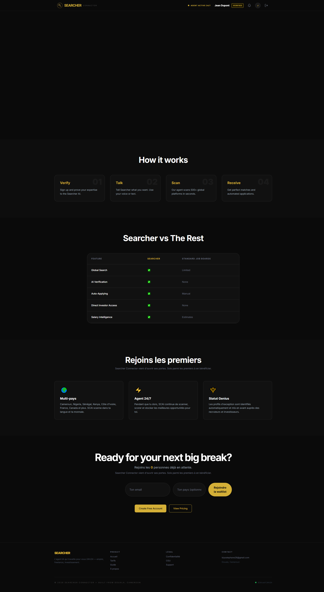
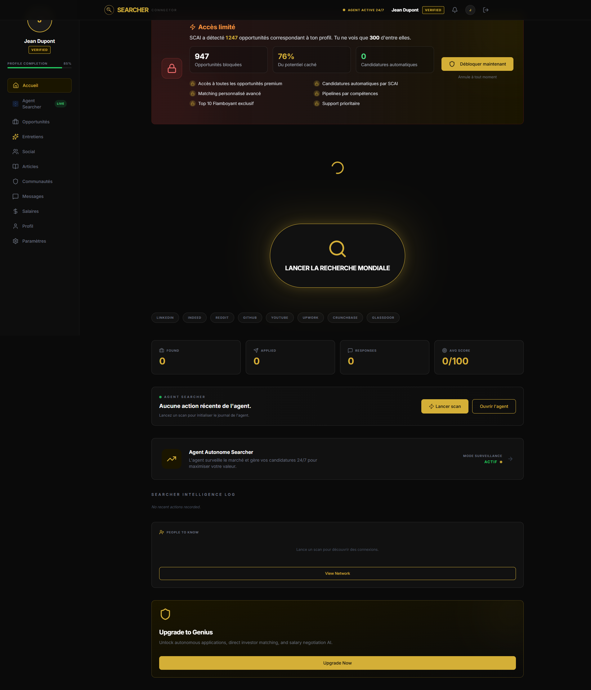
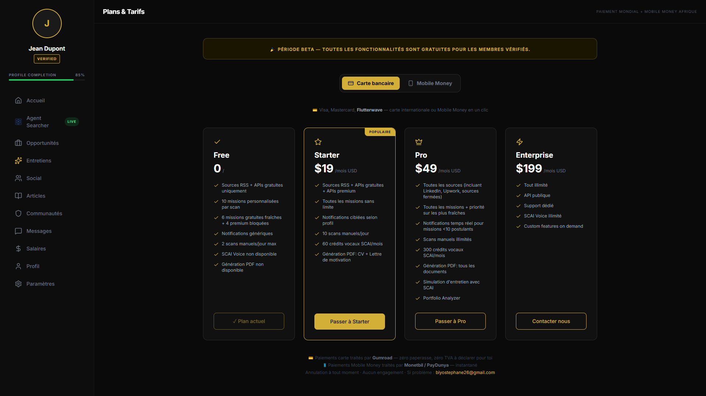
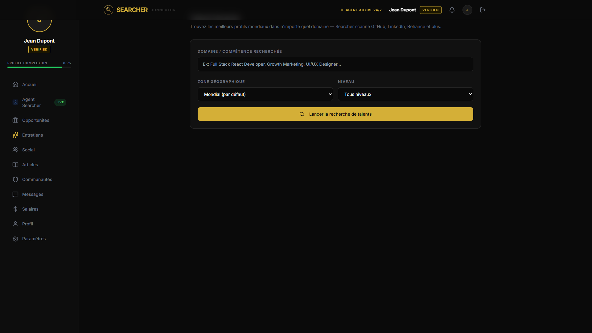
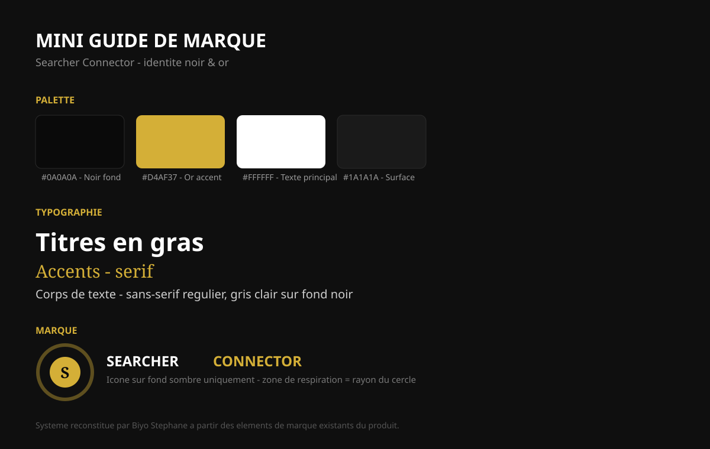

Développeur full-stack, praticien du marketing digital et créateur d'identités visuelles. Ce portfolio s'appuie sur Searcher Connector, un agent SaaS propulsé par l'IA que j'ai conçu, développé et positionné de A à Z.
Une plateforme SaaS qui unifie recherche d'emploi, missions freelance et mise en relation avec des investisseurs autour d'un agent IA actif 24/7. Conçue et développée en solo, du schéma de base de données jusqu'au déploiement.
Frontend Next.js 14 / React / TypeScript / Tailwind, backend via routes API Next.js et workers Node dédiés (files d'attente BullMQ + Redis), base de données Supabase (PostgreSQL), paiements Stripe, emailing SendGrid. Intégrations IA multi-fournisseurs (Anthropic, Google Gemini, Groq) pour le scoring d'opportunités, la vérification de profils et l'assistant conversationnel du produit.
Suite de tests unitaires et end-to-end (Vitest, Playwright), monitoring continu (Checkly) et pipeline CI/CD via GitHub Actions.
Voir le dépôt GitHub →



Au-delà du code : définir qui est le produit, pour qui, et comment le dire. Travail de positionnement, de messaging et de contenus de lancement pour Searcher Connector.
Étudiant en Marketing Digital à la Griotys Digital Academy (Douala), en recherche de stage. Formation orientée réseaux sociaux (SMM), SEO/SEA, création de contenu, publicité Meta et email marketing — appliquée ici au lancement de Searcher Connector.
Problème : les plateformes d'emploi et de freelance existantes sont passives — l'utilisateur doit chercher, filtrer et postuler lui-même, plateforme par plateforme.
Angle choisi : repositionner le produit non pas comme "un job board de plus" mais comme un agent autonome qui agit à la place de l'utilisateur — une promesse simple et différenciante ("travaille pour toi pendant que tu dors").
Segmentation : quatre personas distincts (candidats, freelances, recruteurs, investisseurs), chacun avec son propre parcours et ses propres arguments de conversion, plutôt qu'un message générique unique.
Système visuel noir & or construit autour du produit : palette, typographie et déclinaisons pour les réseaux sociaux, reconstitué ici pour ce portfolio.
